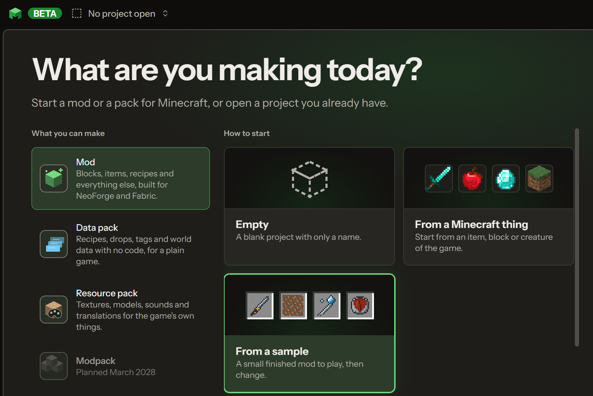
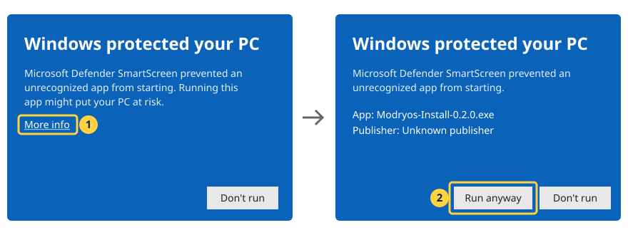

Download Modryos.
Modryos is now in closed beta. Testers get the download link in their invite email.
Windows 10 and 11, 64-bit

- Ask for a placeFill in the short form. It takes a minute.
- Check your inboxWhen your turn comes, your invite email has the download link.
- Install and buildOpen the studio and make your first mod.
Only official downloads
The public releases are listed at github.com/Modryos/modryos/releases. Only downloads from there, from this site or from your invite email are official. Do not trust any other site that offers Modryos.
- SystemWindows 10 or 11, 64-bit
- GamesMinecraft Java Edition
Installing the beta: Windows will warn you
The beta is not signed with a paid certificate yet, so the first time you open the installer Windows shows a blue box, "Windows protected your PC". That is expected. Press More info, check that the app is Modryos-Install, then press Run anyway.

Check the file first (optional). Every build has a SHA-256 checksum. These are the newest ones:
4567d9cd005ee49a86e99f91d18c01d810b201976eb94dbc1b92e14c8f2998cc Modryos-Install-0.1.1-beta.17.exe
c2d049f62d40937030097262674297d8b680f7b2541fbf4b9c88f93a011cb8e4 Modryos-Setup-0.1.1-beta.17.exeOur server lists them all at api.modryos.com/v1/releases/SHA256SUMS. In PowerShell, go to the folder of the file and run Get-FileHash .\Modryos-Install-0.1.1-beta.17.exe (with your file's name), then compare the long number with the line above. If it does not match, do not run the file; tell us at support@modryos.com. The studio checks its own updates the same way before it installs them. More help: the install guide.
Smart App Control. If your Windows has Smart App Control turned on, it blocks apps that are not signed and offers no "Run anyway". Do not turn it off just for Modryos: on many Windows versions it cannot be turned back on without resetting Windows. Wait for the Microsoft Store version instead, which Microsoft signs; we will email you when it is ready.